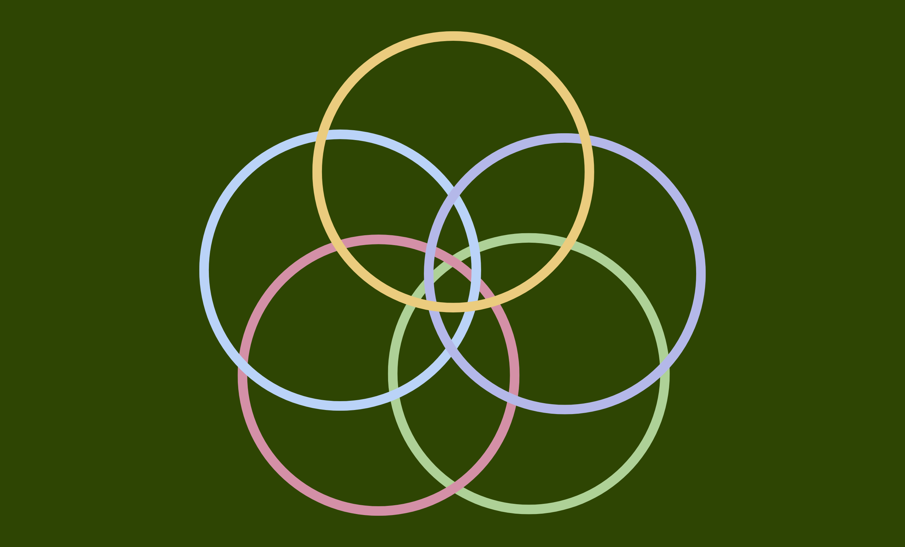

ALL ABOUT COMPUTER SCIENCE
The study of computers explores how the field first took root, how it grew into what it is today, and the many disciplines that branched out from its tree.
| Date | 11 Sept. 2025 |
|---|
Computer Science is the study of computers and computing, focusing on the processes and algorithms behind them, the hardware and software that support them, and the ways they store and process information (Tucker, 2003; Belford & Tucker, 2025).
It is founded on two key parts: INTERACTION and INFORMATION (Baeten & Sangiorgi, 2014).
- Interaction – initiated by agents, which are entities capable of acting with computers through various behaviors over time.
- Information – data that is processed, communicated, and transformed.
The core of Computer Science is knowing what problems can not or can be efficiently solved with a computer (Lindenwood University, n.d.).
I. History of Computer Science (Denning, 2010)
Computer Science emerged as a field in the early 1940s, built on the foundations of mathematics, science, and electrical engineering (Denning, 1999).
| 1940s | AUTOMATIC COMPUTING It was first called ‘automatic computation,’ referring to machines that could perform calculations automatically, reducing or eliminating the need for human intervention in each step. |
|---|---|
| 1950s | INFORMATION PROCESSING In the 1950s, with the invention of computers capable of storing programs, the field was then named ‘information processing,’ which is the capture and manipulation of data to produce retrievable and analyzable information (Nemesh, 2006). |
| 1960s | COMPUTER SCIENCE As the field moved into academia and established itself as a discipline, George Forsythe popularized the term ‘computer science’ in the 1960s (Shallit, 1995). The University of Cambridge had already pioneered the first computer science course in 1953, while Purdue University later founded the first formal department in 1962 (Shallit, 1995; University of Cambridge, 2007). |
| 1980s 1990s |
COMPUTING By the 1980s, the field had expanded to include other disciplines such as information systems, computer engineering, software engineering, and more. In the 1990s, the term ‘computing’ came to be used as an umbrella term for all these areas. |
II. Five Computing Disciplines and Majors (ACM, n.d.)
Computer Engineering
- Designs both hardware components and the software that operates them.
- Combines the hardware focus of electrical engineering with the software aspects of computer science, emphasizing hardware technicality (Michigan Technological University, n.d.)
Computer Science
- Emphasizes programming and the underlying theories of computing.
- Addresses real-world problems while designing and developing innovative technologies and software.
Information Systems
- Focuses on collecting and analyzing data from interactions between humans and computers, and transforming that data into meaningful insights or larger goals (Zwass, 2025).
- Commonly applied in businesses and retail enterprises to manage operations and improve interactions with customers and suppliers
Information Technology
- Integration and management of computing technologies into different kinds of organizations, where it is expected that one must have an essential understanding of how systems are composed and structured.
- Information technology is more related to structuring network systems connecting different structures in an environment that handles the communication of information (Schulza, 2025).
Software Engineering
- Focuses on the systematic understanding, design, and development of software, including operating systems and large-scale applications.
- Involves building and maintaining modern solutions such as cloud-based applications to meet evolving user and business needs (Gagnon, 2023).
III. ANALYSIS
My father was an electronics engineer who built circuits and assembled computers when I was young. Between the ages of six and seven, I would spend hours on the computer exploring different software, making shapes in Paint, or playing The Sims 2. Those early experiences sparked my curiosity about how systems work, how the software I played with was created, and how the computer itself enabled those programs to run. That curiosity eventually led me to look back at the history of computing, and it’s astonishing how far technology has come. Although computing began as a tool for mathematical calculations, it was once described as performing more calculations than all of humanity combined (Computer History Museum, n.d.); its impact has grown beyond what it was originally intended for.
While the purpose of computers has remained consistent, automating tasks and solving problems efficiently (Lindenwood University, n.d.), the way we use them has transformed dramatically. What once required machines the size of rooms and kilometers of wiring can now be done instantly on devices that fit in our hands. Today, connectivity is just a tap away through our smartphones. Without computers, where would humanity be? They have propelled civilization forward and reshaped how we live, learn, and understand the world around us.
More importantly, computing has given rise to diverse disciplines and fields, each offering unique ways to explore, create, and innovate. Every discipline plays an important role in expanding the boundaries of computing. Although problems are approached step-by-step, the way these disciplines offer is how to uniquely solve problems in their own way, or what interaction can efficiently and effectively solve that problem. None should be underestimated, because together they share the same goal, which is to advance technology for the betterment of humanity.
For all the progress achieved, I like to think of computing as a seed that has grown into a flower, blossoming into countless disciplines and fields. Many people wish they had been born in another generation, but I am grateful to live in the computing age, where information is accessible at our fingertips and opportunities to learn are greater than ever.
| Reference |
|---|
- Association for Computing Machinery. (n.d.). Computing disciplines & majors. Association for Computing Machinery. https://www.acm.org/binaries/content/assets/education/computing-disciplines.pdf
- Baeten, J. C. M., & Sangiorgi, D. (2014). Concurrency theory: A historical perspective on coinduction and process calculi. Handbook of the History of Logic, 399–442. https://doi.org/10.1016/b978-0-444-51624-4.50009-5
- Belford, G.G., Tucker, A. (2025, September 3). computer science. Encyclopedia Britannica. https://www.britannica.com/science/computer-science
- Computer History Museum. (n.d.). Timeline of computer history. In Timeline of computer history. https://www.computerhistory.org/timeline/computers/
- Denning, P. J. (1999). Computer science: The discipline (Revised July 1999). In Encyclopedia of Computer Science (A. Ralston & D. Hemmendinger, Eds.).
- Denning, P. J. (2010). The great principles of computing. American Scientist, 98(5), 369. https://doi.org/10.1511/2010.86.369
- Gagnon, D. (2023). What does a software engineer do? Southern New Hampshire University. https://www.snhu.edu/about-us/newsroom/stem/what-does-a-software-engineer-do
- Lalanda, P., McCann, J. A., & Diaconescu, A. (2013). Autonomic Computing: Principles, Design and Implementation. Springer London. https://doi.org/10.1007/978-1-4471-5007-7
- Lindenwood University. (n.d.). What is computer science? https://www.lindenwood.edu/science/mathematics-computer-science-and-information-technology/computer-science/prospective-students/what-is-computer-science/
- Michigan Technological University. (n.d.). What is Computer Engineering? https://www.mtu.edu/ece/undergraduate/computer/what-is/
- Nemesh, M. (2006). Information processing. In Encyclopedia of Business and Finance (2nd ed.). Gale. https://www.encyclopedia.com/finance/finance-and-accounting-magazines/information-processing
- Schulze, J. (2025). What is Information Technology? 2025 guide. Coursera.https://www.coursera.org/articles/what-is-information-technology
- Shallit, J. (1995). A very brief history of computer science. University of Waterloo. https://cs.uwaterloo.ca/~shallit/Courses/134/history.html
- Tucker, A. (2003, October). A model curriculum for K–12 Computer Science. https://ftp.unpad.ac.id/orari/library/library-ref-eng/ref-eng-3/application/education/curriculum/k12final1022.pdf
- University of Cambridge. (2007). The Diploma course. Cambridge Computer Laboratory. https://www.cl.cam.ac.uk/teaching/0708/DIPLOMA/node4.html
- Zwass, V. (2025). Information system. In Encyclopaedia Britannica. https://www.britannica.com/topic/information-system
Thank you for your curiosity.